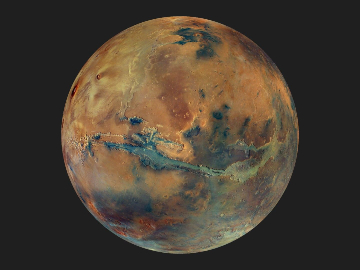
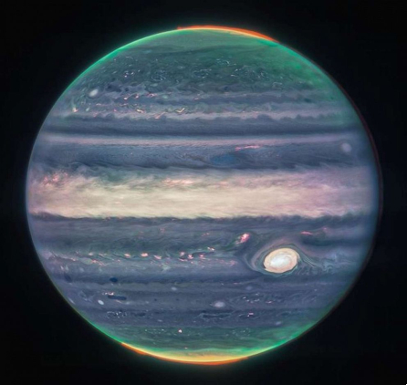
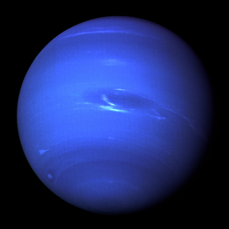

Mars is home to a vast canyon system called Valle Marineris, as well as Olympus Mons, the largest volcano in the solar system.

The largest planet in our soalr system, Jupiter, has the same ingredients as a star but did not grow big enough to ignite.

Neptune, the furthest planet from the sun, has four different seasons that last more than 40 years each.